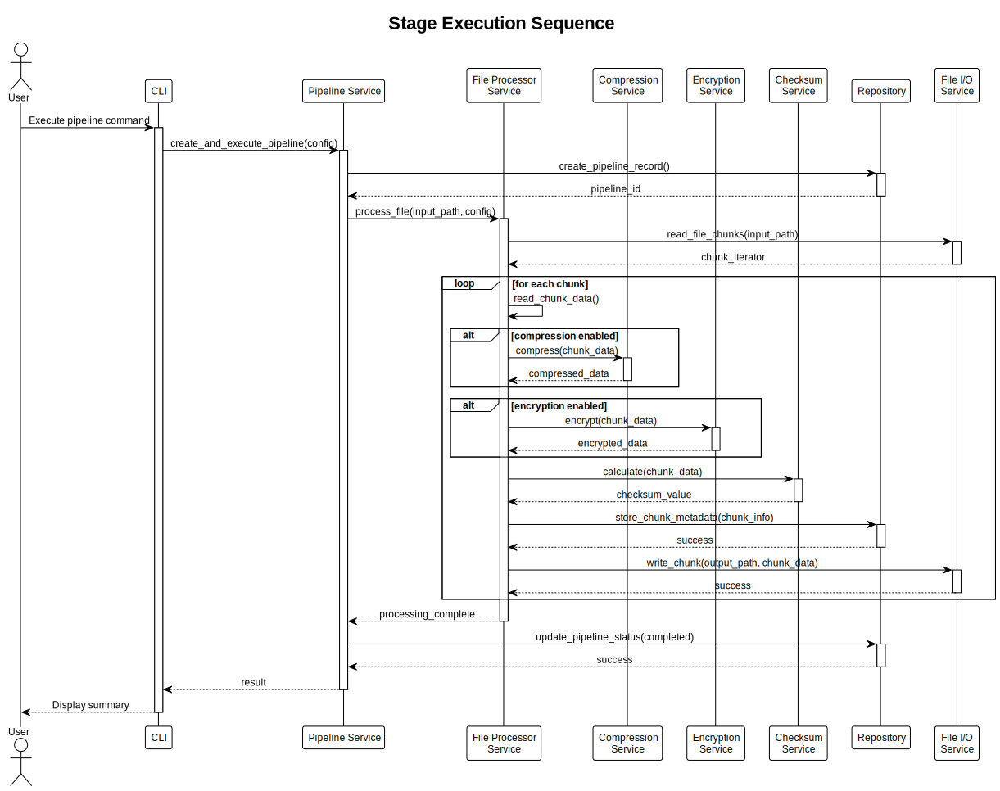
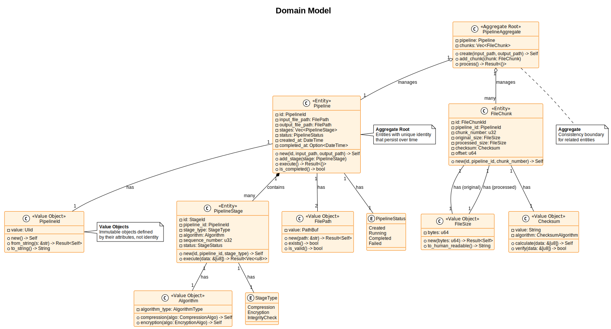

Core Concepts
Version: 0.1.0 Date: 2025-01-04 SPDX-License-Identifier: BSD-3-Clause License File: See the LICENSE file in the project root. Copyright: © 2025 Michael Gardner, A Bit of Help, Inc. Authors: Michael Gardner Status: Draft
Essential concepts for understanding the pipeline.
Key Terminology
Pipeline
A complete file processing workflow with:
- Unique ID: Every pipeline has a ULID identifier
- Input path: Source file to process
- Output path: Destination for processed data
- Stages: Ordered list of processing steps
- Status: Created → Running → Completed (or Failed)
Stage
An individual processing operation within a pipeline:
- Type: Compression, Encryption, or Integrity Check
- Algorithm: Specific implementation (e.g., Brotli, AES-256-GCM)
- Sequence: Order in the pipeline (1, 2, 3, ...)
- Configuration: Stage-specific settings
File Chunk
A portion of a file processed independently:
- Size: Configurable (default 1MB)
- Sequence: Chunk number (0, 1, 2, ...)
- Checksum: Integrity verification value
- Offset: Position in original file
Core Components
Entities
Pipeline Entity
#![allow(unused)] fn main() { Pipeline { id: PipelineId, input_file_path: FilePath, output_file_path: FilePath, stages: Vec<PipelineStage>, status: PipelineStatus, created_at: DateTime, } }
PipelineStage Entity
#![allow(unused)] fn main() { PipelineStage { id: StageId, pipeline_id: PipelineId, stage_type: StageType, algorithm: Algorithm, sequence_number: u32, } }
Value Objects
FilePath - Validated file system path
- Must exist (for input) or be writable (for output)
- Supports absolute and relative paths
- Cross-platform compatibility
FileSize - File size in bytes
- Human-readable display (KB, MB, GB)
- Validation for reasonable limits
- Efficient storage representation
Algorithm - Processing algorithm specification
- Compression: Brotli, LZ4, Zstandard
- Encryption: AES-256-GCM, ChaCha20-Poly1305
- Checksum: Blake3, SHA-256
Data Flow
Sequential Processing
Stages execute in order:
Input → Stage 1 → Stage 2 → Stage 3 → Output
Parallel Chunk Processing
Chunks process independently:
Chunk 0 ──┐
Chunk 1 ──┼→ All go through stages → Reassemble
Chunk 2 ──┘
This enables:
- Concurrency: Multiple chunks processed simultaneously
- Memory efficiency: Only active chunks in memory
- Scalability: Leverage multiple CPU cores
Pipeline Execution Sequence

- CLI receives command
- Pipeline Service creates pipeline
- File Processor reads input file
- For each chunk:
- Apply compression (if enabled)
- Apply encryption (if enabled)
- Calculate checksum (always)
- Store chunk metadata
- Write processed chunk
- Update pipeline status
- Return result to user
Domain Model
Our domain model follows Domain-Driven Design principles:

Aggregates
Pipeline Aggregate - The root entity
- Contains Pipeline entity
- Manages associated FileChunks
- Enforces business rules
- Ensures consistency
Relationships
- Pipeline has many PipelineStages (1:N)
- Pipeline processes FileChunks (1:N)
- FileChunk belongs to Pipeline (N:1)
- PipelineStage uses Algorithm (N:1)
Processing Guarantees
Integrity
Every chunk has a checksum:
- Calculated after processing
- Verified on read/restore
- Detects any corruption
Atomicity
Pipeline operations are transactional:
- All stages complete, or none do
- Metadata stored consistently
- No partial outputs on failure
Durability
Processed data is persisted:
- SQLite database for metadata
- File system for binary data
- Recoverable after crashes
Next Steps
Continue to:
- Pipeline Stages - Types of stages available
- Configuration Basics - How to configure pipelines
- Running Your First Pipeline - Hands-on tutorial